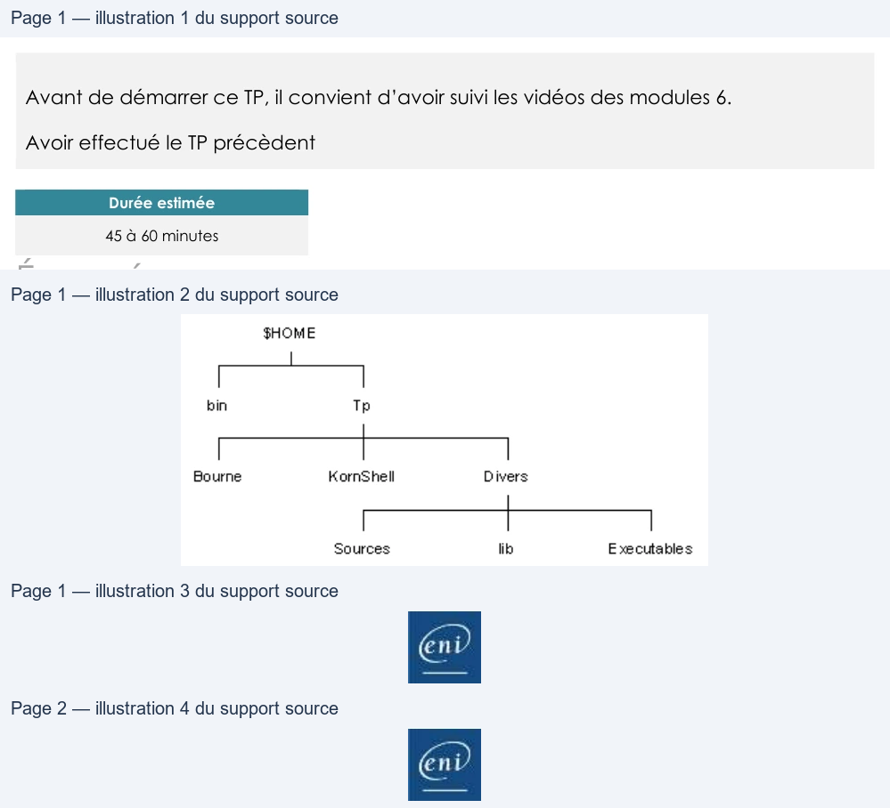

Transcription du document du Drive TSSR. La mise en forme est adaptée au Web ; les compléments IA du portail sont présentés séparément.
Les métacaractères
TP du Module 06 – Spécificités du shell Bash
Avant de démarrer ce TP, il convient d’avoir suivi les vidéos des modules 6.
Avoir effectué le TP précèdent
Durée estimée
En fonction du module que vous venez de parcourir, vous trouverez les commandes
nécessaires pour répondre aux questions.
1. Afficher les fichiers et répertoires (pas leur contenu) dont le nom commence par a,
b, c ou d du répertoire /etc.
..............................................................................................................................................
..............................................................................................................................................
..............................................................................................................................................
2. Créer l'arborescence suivante dans votre répertoire de travail ($HOME) en une seule
ligne de commande :
..............................................................................................................................................
..............................................................................................................................................
..............................................................................................................................................
..............................................................................................................................................
Page 1/2
© ENI – Tous droits réservés
FHÔME
bin
Th
Bourne
KornShell
Divers
Sources
lik:
Executables
Les métacaractères
3. Positionnez-vous dans le répertoire Sources. Dans ce répertoire, créer un fichier qui
comporte, dans son nom, un astérisque.
..............................................................................................................................................
..............................................................................................................................................
..............................................................................................................................................
..............................................................................................................................................
4. Sans vous déplacez dans l’arborescence, essayer de supprimer le répertoire Sources
en utilisant la commande rmdir. Que constatez-vous ?
..............................................................................................................................................
..............................................................................................................................................
..............................................................................................................................................
..............................................................................................................................................
5. Supprimer le répertoire Divers en utilisant la commande rm.
..............................................................................................................................................
..............................................................................................................................................
..............................................................................................................................................
6. Après vous être positionné dans votre répertoire d'accueil, afficher la liste détaillée
des fichiers répondants aux critères suivants :
- ils sont présents directement dans /etc
- leurs noms finissent par l'extension .conf
- la première lettre est une consonne, celle précédant l'extension est comprise entre
f et s
- ils comportent exactement 6 lettres (hors extension).
..............................................................................................................................................
..............................................................................................................................................
Une solution est proposée pour ce TP sous la forme d'un PDF commenté, disponible dans les
ressources à télécharger.
Page 2/2
© ENI – Tous droits réservés
